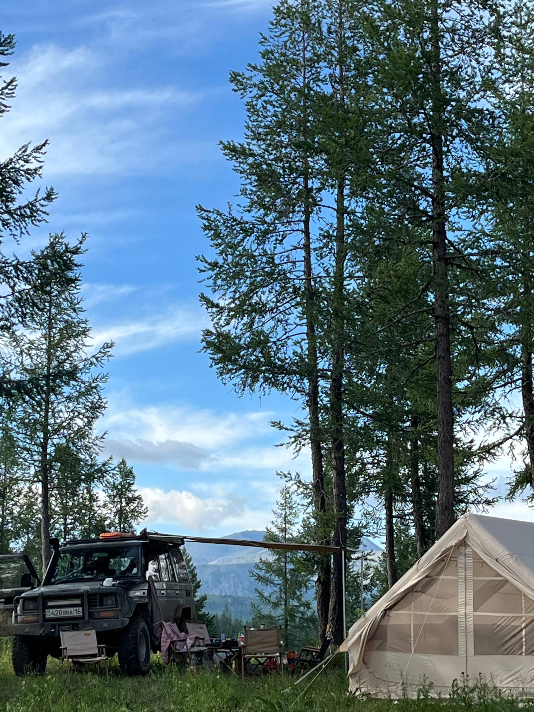

East Kazakhstan is where the Altai mountains meet the vast Kazakh steppe, on a border shared with Russia, China, and Mongolia. For a traveler looking beyond the well-trodden Central Asian circuit — beyond Almaty, beyond Kyrgyzstan's mainstream trails — this is one of the last frontiers of accessible wilderness in the region. This guide covers what's here, how to reach it, when to come, and how to plan the trip without getting lost in fragmented local information.
Where is East Kazakhstan
East Kazakhstan Oblast (in Russian, VKO) sits in the northeast corner of Kazakhstan. It borders the Russian Altai to the north and the Chinese Xinjiang and Mongolian Bayan-Ölgii regions to the east. The regional capital is Ust-Kamenogorsk (Öskemen), a city of about 330,000 with the region's main airport. The mountain town of Ridder, further north in the Altai foothills, is where most adventure operators — ourselves included — are based.
The geography does the heavy lifting: south-facing slopes of the Katunsky, Listvyaga, Sarymsakty, and South Altai ranges, the headwaters of the Bukhtarma and Belaya Berel rivers, hundreds of alpine lakes, and cedar taiga that runs uninterrupted for hundreds of kilometers. This isn't a landscape you dip into for a day trip. Distances are large, roads thin out fast, and the reward is a scale of wilderness that has become rare in accessible parts of the world.
At a glance
- RegionEast Kazakhstan Oblast (VKO)
- Regional capitalUst-Kamenogorsk (Öskemen)
- Main hub for adventure travelRidder
- Highest peakMount Belukha, 4506 m
- Main national parkKaton-Karagay (643,477 ha)
- UNESCO statusGreat Altai Biosphere Reserve (2017)
Key destinations in the region
Katon-Karagay National Park
The single biggest reason to travel east. At 643,477 hectares, it's Kazakhstan's largest national park — bigger than Luxembourg by half. Established in 2001 and inscribed as a UNESCO biosphere reserve in 2014, it protects the south face of Mount Belukha (4506 m, the highest peak of the Altai), the Bukhtarma river headwaters, and some of the last untouched cedar taiga in Central Asia.
Inside the park you'll find Lake Yazevoye in the White Berel valley, the Rakhmanov Springs historic radon spa dating to the 18th century, the 60-meter Kokkol Waterfall reachable only on foot or horseback, and the Berel burial mounds — Scythian royal graves from the 4th century BC where permafrost preserved wooden artifacts, leather, and even sacrificial horses with gold ornaments. The 1998 excavation by a French-Italian-Kazakh team here made international archaeological headlines.
For a full breakdown of the park, its access rules, and internal locations, see our dedicated Altai Mountains guide.

Lake Markakol
A separate protected area — Markakol State Nature Reserve, not part of Katon-Karagay — but usually visited on the same trip because the historic Austrian Road connects them across a series of high mountain passes. Markakol is Kazakhstan's second-largest lake by area, sitting at 1,447 meters. Its endemic species, the uskuch, a salmonid fish, exists nowhere else in the world. The valley itself is the coldest inhabited pocket of Kazakhstan, and the wettest — around 600 mm of annual precipitation supports a black-taiga forest ecosystem that carries relict elements from before the ice age.
Ridder and the Ivanovsky Range
Founded in 1786 as a silver-mining settlement, Ridder is the base town for short-format adventure travel in East Kazakhstan. The immediate area holds several classic day-trip destinations: Lake Radon at 1906 meters with turquoise water and abandoned mining adits, the Bogdanikha river mouth where two rivers meet in a strikingly blue confluence, and the Zvezdny Pass with views into the Ivanovsky range. For a multi-day option, the Maloulbinskoye Reservoir — a high-altitude water body with pre-revolutionary dam infrastructure — is one of the region's most remote accessible spots.
The Bukhtarma Valley
South and east of Ust-Kamenogorsk, the Bukhtarma River threads through wooded valleys, past the massive Bukhtarma Reservoir (created in the 1960s), and into the Altai. It's the main travel corridor into Katon-Karagay and has its own attractions along the way, including several beaches on the reservoir, hot springs, and historic Russian Old Believer villages.
How to get there
By air
Ust-Kamenogorsk (UKK, airport code UKK) has daily flights from Astana (about 1h 40min) and Almaty (about 1h 50min). Both Kazakh capitals connect to Europe: Astana has direct flights from Frankfurt, London, Dubai, and Istanbul; Almaty from more European hubs including Amsterdam, Prague, and Riga. The most efficient routing for European travelers is Frankfurt or Istanbul → Astana → Ust-Kamenogorsk, typically 10–14 hours total including transit.
There's a smaller airport in Semey (SEM) further north, but for adventure travel targeting the Altai, UKK is the correct arrival point.
By train
Overnight trains connect Ust-Kamenogorsk with Astana (around 20 hours) and Almaty (24 hours). They're comfortable in kupe class, cheap, and give you a slow-travel intro to the country. Not for every traveler, but memorable if you have the time.
Onward from Ust-Kamenogorsk
Once in UKK, most Altai destinations are 2–7 hours away by road. Katon-Karagay is 360 km east, roughly 7 hours. Ridder is 120 km north, around 2.5 hours. Rental cars exist but roads inside the national park require a proper 4WD, and driving unfamiliar Kazakh mountain roads is not something we'd recommend for first-time visitors. A local operator handles the transfer.
When to go
The travel window for East Kazakhstan is short but productive: mid-June through mid-September. Outside this window, mountain roads are either snowed in or dangerously muddy from snowmelt.
- June. Rivers are full, meadows start flowering, but some tracks are still recovering from spring. The park is quiet.
- July. Peak season. All destinations accessible, warm evenings, wildflowers at maximum. Book ahead — the best local guides fill up.
- August. Warm and dry. Berries and mushrooms in the taiga. Excellent time for fishing-oriented itineraries.
- September. Golden autumn, almost no other tourists, cold nights. Shorter days mean tighter itineraries.
Practical planning
Visas
Kazakhstan has generous visa-free access. Citizens of the EU, UK, US, Canada, Australia, and many other countries can enter for up to 30 days without a visa. Check the current list on your local Kazakh embassy website before booking, as policies do shift. For longer stays or specific nationalities, an e-visa is available online.
Border zone permits
Katon-Karagay National Park sits in a border zone. Foreign nationals need a border zone permit processed through the Department of Internal Affairs in East Kazakhstan Oblast. This takes 2–4 weeks and requires passport details, planned dates, and specific locations. If you're traveling with a local operator, this is handled on your behalf — but the timeline means you cannot decide to visit the park on short notice as a foreign traveler.
Currency and payments
Currency is the Kazakh tenge (KZT). Card payments work in Ust-Kamenogorsk and Ridder in all restaurants, hotels, and supermarkets. Once you're in Katon-Karagay village or beyond, cash is essential. Most local operators accept international bank transfer or PayPal for prepayment.
Safety
Kazakhstan is one of the safest countries in Central Asia. Violent crime against tourists is essentially non-existent; the practical risks are the same as anywhere with big mountains and remote roads — weather, navigation, altitude for people flying in from sea level. Traveling with a licensed operator addresses all of the above.
Language
Russian is the working language across the region, alongside Kazakh. English is spoken by younger staff in urban hotels and by adventure operators (including ourselves), but you should not expect to navigate remote areas in English alone. Google Translate offline packs work well.
Suggested itineraries
Three format tiers cover most travelers who reach East Kazakhstan:
- Weekend (2–3 days). Fly into UKK, transfer to Ridder, one or two day trips (Lake Radon + Bogdanikha), return. Realistic for a Central Asia stopover.
- One week (7 days). The sweet spot. Katon-Karagay expedition covers the main sights — Berel, Lake Yazevoye, Chindagatuy, Markakol via the Austrian Road — with the right balance of driving and stationary camp time.
- Two weeks (10–14 days). Combine Altai with the Bukhtarma valley, add Rakhmanov Springs, include a day in Ust-Kamenogorsk museums, potentially cross into the Semey region for Soviet history at Kurchatov.
Katon-Karagay
Altai Expedition
7 days / 6 nights covering the highlights of Katon-Karagay National Park and Lake Markakol. Small group format, three vehicles, everything included.
Traveling with a local operator
East Kazakhstan is one of those destinations where independent travel is possible in theory and painful in practice. Distances are long, mountain roads change condition weekly, permits take time, and the language barrier is real outside cities. Working with a local partner is not just a convenience — it's what makes access to the interesting locations feasible on a 7-day trip.
At Asferia, we operate as a full-service travel partner: we run our own jeeps and guides for the wilderness sections, and we coordinate everything around them — international pickups, accommodation across the region, restaurant reservations, transfers, permits, translators, and add-on activities from local suppliers. For a deeper look at how we structure trips, see How Asferia Works.
If you're considering East Kazakhstan for 2026, get in touch early — the good July slots close by March.